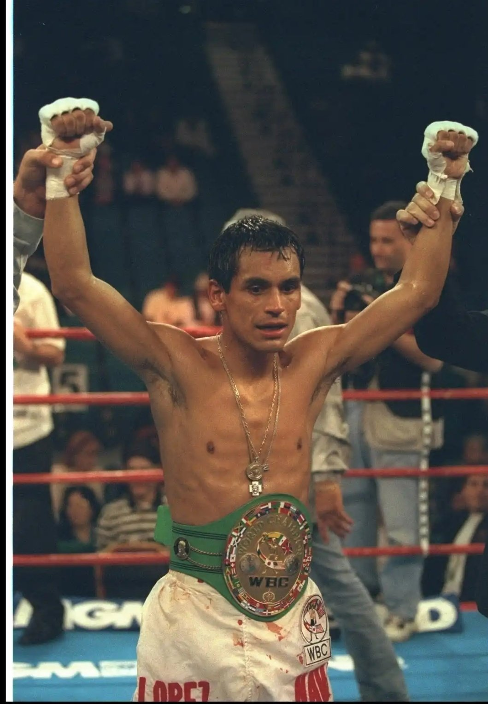

Ricardo "El Finito" López made his professional debut in 1985, showcasing an impeccable style that would become his trademark. Known for his incredible defense, smooth boxing technique, and perfect record, López soon became one of the most respected fighters in the minimum weight division. His debut marked the beginning of an undefeated career, one of the most remarkable in boxing history.
One of López’s defining fights was against Japan’s Ryo Miyazaki. López's unparalleled technical skills and defensive mastery allowed him to retain his WBC Minimumweight title, solidifying his place as one of the sport's all-time greats.
In this fight, López faced a fierce competitor in Saul Soto. Despite Soto's challenges, López’s flawless technique and sharp ring IQ led to a dominant victory, further confirming his status as the best in his weight class.
Ricardo López’s career is defined by his astonishing undefeated record and multiple world championships in the minimum weight class. He dominated the division for over a decade, never losing a fight, and he became a benchmark for technical excellence in boxing.
Despite his flawless record, López faced challenges such as limited competition in the minimum weight division, which led to frustration as he sought worthy opponents. However, his determination to prove his greatness remained unshaken, and he continued to dominate the sport. López’s struggle was not physical but rather mental, as he constantly sought new challenges to maintain his legendary status.